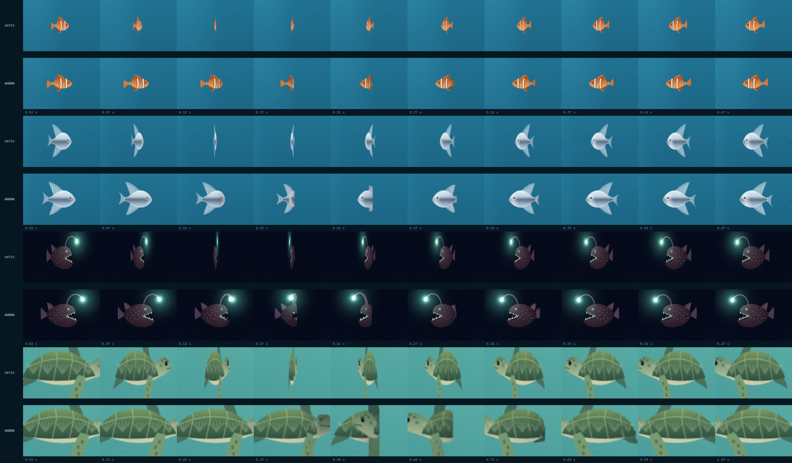
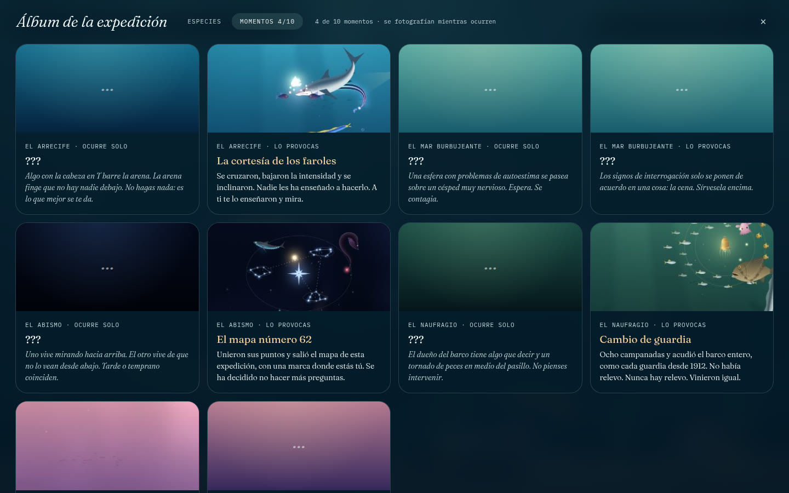
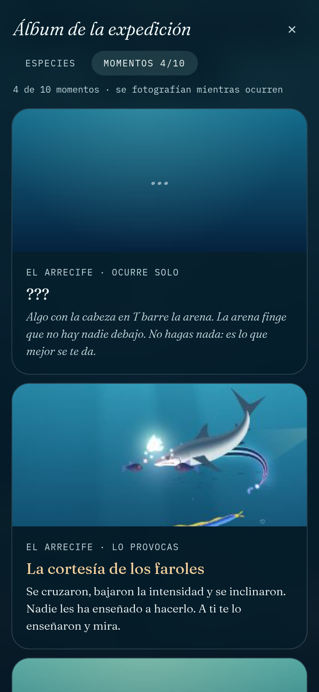

RAMA graficos-descanso
Acuario Abisal,
antes y ahora
El mismo juego, con la misma partida, el mismo instante y las criaturas en la misma posición. Arrastra la línea de cada imagen para comparar. Al final, los diez momentos nuevos para observar.
Los cinco ecosistemas
El agua ahora tiene superficie, luz que entra y respira en ciclos de unos diez segundos, y distancia: cada bioma tiene sus propios planos lejanos y su clima.
Interfaz
La interfaz se aparta: una sola línea arriba, el cebo abajo, vidrio en lugar de cajas opacas y ningún texto por debajo de 11 px.
Móvil
A 390 px el selector de bioma se salía de la pantalla. Ahora todo cabe, también a 320 px, y los cebos son botones del tamaño de un dedo.
Las 44 especies
Todas redibujadas: siluetas reales, volumen que sigue la curva del cuerpo, contrasombra, aletas con radios y ojos a escala. Las especies ficticias conservan su luz propia.
La media vuelta
Antes, al cambiar de sentido, el dibujo se estrechaba hasta una línea y se abría del revés, como un naipe. Ahora la cabeza gira primero y viene hacia quien mira, el cuerpo se curva detrás y la cola llega la última. El costado que queda de canto tiene grosor y sombra, y las luces viajan con el cuerpo sin deformarse. En tiburones y anguilas la torsión baja de la cabeza a la cola en vez de rodar todo el cuerpo a la vez. El vídeo va a media velocidad.
Instante a instante

Momentos para observar
Diez escenas, dos por ecosistema, sacadas de lo que ya contaban las fichas del álbum. Unas ocurren solas si te quedas mirando y otras las provocas tú. Se completan fotografiándolas mientras ocurren y quedan en una pestaña nueva del álbum, con una pista para cada una.
La pestaña Momentos del álbum


Lo medido
Comprobado con el navegador, jugando con ratón y teclado, en perfiles limpios.
- Rendimiento. 60 fps en los cinco ecosistemas con la población máxima, a densidad de píxel 1 y 2, en un portátil con gráfica integrada en modo de ahorro de energía. Si un equipo no llega, la calidad baja sola antes que la suavidad.
- Simulación intacta. El comportamiento de las 44 especies (cada
update(), constructor y dato del registro) es idéntico al de antes: solo cambió cómo se ven. - Giros. Al dar la vuelta, el mayor salto entre dos fotogramas pasó de alrededor del 100 % del cambio a entre el 9 y el 33 %: ya no se voltean de golpe, y la vuelta con volumen mantiene los 60 fps aunque gire medio banco a la vez.
- Partidas. Una partida va de la versión antigua a la nueva y vuelve sin perder nada, momentos incluidos.
- Arreglos. Registrar con una foto no encendía la flecha de bioma. La flecha cerrada no decía cuánto faltaba. Al Abismo le entraba luz de sol. El visor salía desplazado al seguir a una criatura.
- Navegadores. Chrome y Firefox. Sin WebGL2 el agua se pinta con un plan B en 2D. Safari no se ha probado.
- Pendiente de decidir. Anguilas y tiburones se enroscan en bucle alrededor de un tercio del tiempo. Ya pasaba antes y viene de la simulación, que esta rama no toca.